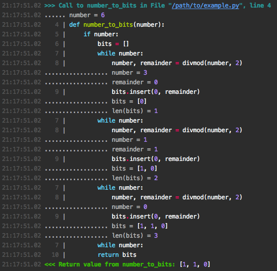
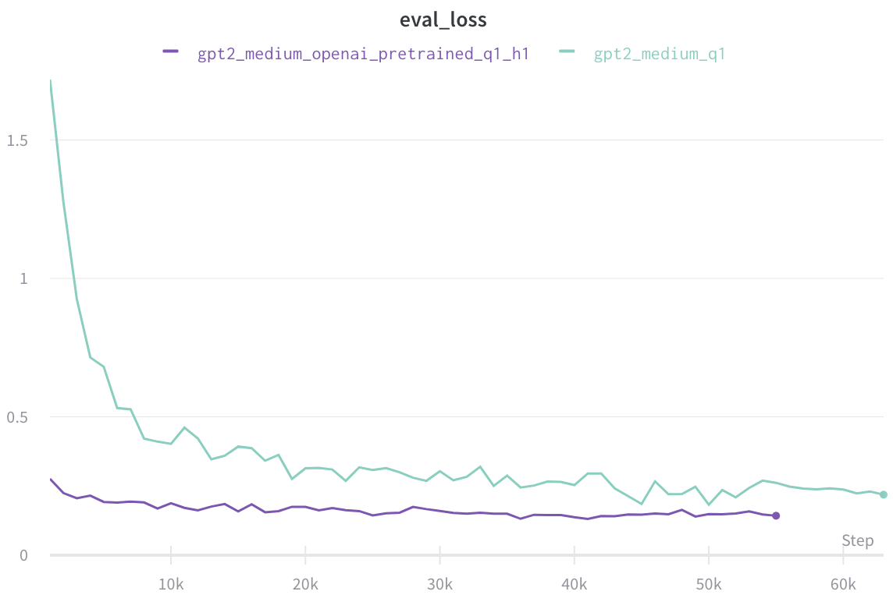
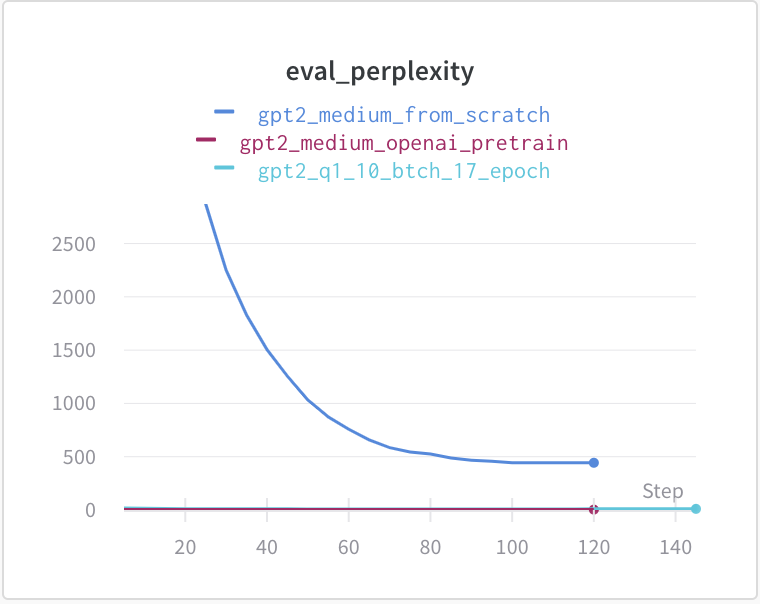
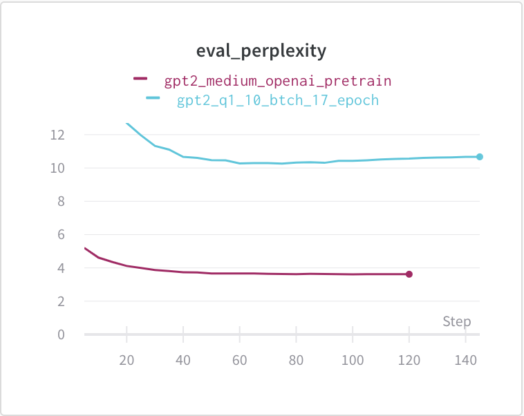

Existing ML for code methods often learn from raw source code and sometimes use data flow to understand programs. While these offer large amounts of data they don’t actually show what code fundamentally does, changes state.
With that in mind I’ve created a dataset of over 1 million ran python programming solutions with state changes shown after each line of code. Get it here
Motivation
Most AI for code models only learn from reading code. This lets AI models recognise patterns in the code & generate sensible-looking code.
But do these models really understand code? If you were to read code without running anything and had no prior knowledge of programming would you know how to use it?
An example
Lets try learning about a single program character the way an AI would.
Below is a simple program with just 1 character replaced by a Chinese character making the code inscrutable. This is a similar experience for an AI seeing the true character for the first time.
As you can see the code is inscrutable.
C = A六B
D = B六C
E = A六D
D = C六EHow could I make this understandable without showing the true character?
Since all code does is change state, lets show state changes between each line.
Below shows state changes but the values are also represented by Chinese characters.
.. A = 书
.. B = 書
C = A六B
.. C = 書
D = B六C
.. D = 书
E = A六D
.. E = 书
D = C六E
.. D = 書Lets look at all the operations with the values substituted in:
书六書=書, 書六書=书, 书六书=书, 書六书=書
If you are familiar with programming you may be able to guess that 六 is an and operator with 书 being True & 書 being False.
Here’s the original code with swapped words:
# and is 六
# True is 书
# False is 書
C = A and B
A = A and C
D = C and B
D = D and DThink how much more code you would need to read to figure out what 六 meant if you couldn’t see state changes. For this reason I rekon showing state changes will help AI models understand code.
How I got this data
I first found the CodeChef dataset it’s got 1 million solutions to programming problems but few are in Python and many aren’t runnable.
HackerRank is a site where programmers can practice for interviews on their huge range of programming problems. It has a “See Solutions” button that lets you read other peoples solutions. I used Selenium to click on that button for every problem to get solution URLs. Then I used Requests to download those solutions. After a few days I had 1 million solution code snippets with on average 1k solutions per problem.
Recording State Changes
Once I had my runnable code snippets I used Snoop to record all the state changes occurring in each program run.
Snoop dynamically adds logs to your code showing what has executed & which state values have changed. To see how this works check out this talk.

Next step was to run all the code snippets. The script used to run the code and progress logs can be found here (EDIT: I have unfortunatelty lost the script but you may enjoy looking at some lovely progress graphs instead). Thankfully running all these code snippets didn’t cause many issues, I just had to watch out for some the occasional massive code snippet.
An interesting yet worrying feature of the Snoop files is that they are highly compressible, the zip file is 1/10th the size of the txt file. This is likely due to repetitions in the snoop due to the same code being ran repeatedly in for loops and method calls.
Initial Results
With the dataset completed I trained gpt2 to perform causal language modelling on the raw text. I wanted to see if the Snoops text offers the model any unique insights about code.
Pre-Training
Here you can see some initial results on training gpt2 & BERT on the data.

Surprisingly gpt2 with OpenAI pre-training (blue) is actually already very accurate on the Snoop text.
When having it generate text with short prompts I found it to be far less accurate than the 1.1 evaluation perplexity. It seems like the gpt2 model is spotting patterns in it’s prefix string & is using them to predict future tokens rather than having a probabilistic model of an interpreter.
A Downstream Task
Here you can see it fine-tuned on CoNaLa (a description-to-code translation task). The Snoop data is better than no pre-training but not as good as gpt2 with OpenAI pre-training. Of course the Snoops model hasn’t had the same amount of training time nor has it seen natural language before so its not a fair test.


Future Work
There’s a lot of potential in using state changes to understand code. Right now I don’t think just reading the raw snoops text is the way to go but I think a well formatted, compressed version could do better. Next time I’ll show how well a compressed version of this dataset can teach a transformer to act as a Python interpreter.
Here’s some other investigations you could do with this dataset:
- Further testing on how this helps downstream tasks, try training a language model on just the code & just the Snoop, see which does better on downstream tasks & by how much. These downstream tasks could include bug detection, data type prediction, search & description2code generation.
- Run Snoop on the Django source code with the English2Django dataset comments in the code. That way a language model will learn NLP, code & state all at the same time. Note that I got a lot of
STATE_UNAVAILABLEmessages when I tried this so be ready to filter a lot of data. - Try applying this method to another programming language, maybe there’s a similar tool for Java or Javascript?
- Try filtering & rearranging the data for new tasks. It offers a valuable insight as to what parts of the source code are useful to humans.